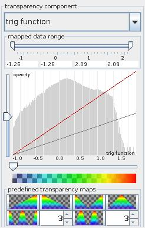
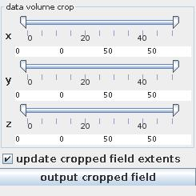

VOLUME RENDERER
Volume rendering is a set of techniques used to display a 2D projection of a 3D discretely sampled data set.
Input data
At input the module requires a regular 3D 3-space field with affine geometry with at least one scalar component.
Output data
At output the module delivers a regular 3D 3-space field with affine geometry and a geometry object.
Transparency map

The Transparency component drop down list defines the component delivered with the input field which decides about the transparency of the VNGeometryObject at output. By default the first component in the list is used. Choosing null ...
The mapped data range slider allows the user to cut the range of the transparency component from below and above. For values below or above the range the minimum or maximum range value is used, respectively. By default the whole range is used.
The transparency map defines opacity at the y-axis dependently on the transparency component value on the x-axis. The red colored opacity function is editable by dragging mouse button on the transparency map field: left mouse button for free drawing, Shift+left mouse button for drawing a straight line, right mouse button for smoothing.
The effective opacity value is represented by the gray colored line which is proportional to the red line with a factor between 0 and 1 to be choosen by the y-slider. The x-slider allows to cut the value range from below setting effecitve opacity zero for values below the minimum value. The bar below the transparency map illustrates choosen values for transparency and color.
In the background of the transparency map the histogram of transparency component values is presented.
Finally, the user can choose between several predefined transparency maps.
Data Volume Crop

The data volume crop sliders allow to crop the field in x-, y- and z-direction from above and below. Update cropped field extends check box freshens up minimum and maximum values of data. Output cropped field button exports the cropped field to data output.